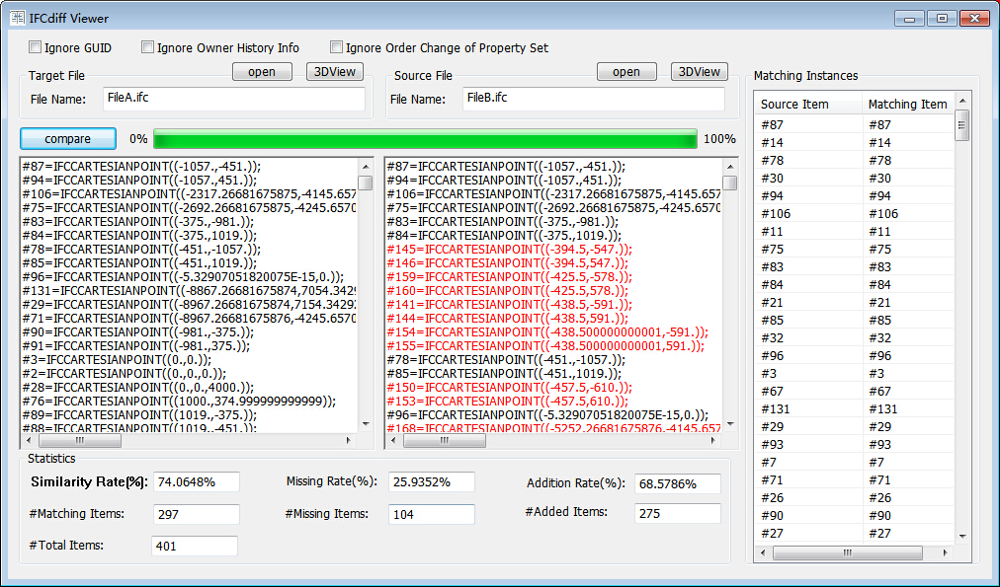

IFCdiff: A content-based automatic comparison approach for IFC files with hierarchical structures
aSchool of Software, Tsinghua University, Beijing, China
bKey Laboratory for Information System Security, Ministry of Education of China
cTsinghua National Laboratory for Information Science and Technology
dBRE Institute of Sustainable Engineering, Engineering School, Cardiff University, UK

Figure 1: A screen shot of the IFCdiff tool. The users import two IFC files to be compared and the similarity, missing rate and adding rate will be displayed.
{kind=link}


Figure 2: The screenshot of the IFCdiff viewer.
Abstract:
As IFC (Industry Foundation Classes) files used in construction industry are on the dramatic increase, it often requires effective IFC comparison methods to keep track of important changes occurring during the lifecycle of construction projects. However, most IFC comparisons are based on a visual inspection, a manual count and a check of selective attributes. Although a few techniques about automatic IFC comparisons have been developed recently, they are usually very time-consuming, and are sensitive to the GUID change or redundant instances in IFC files. To address these issues, this paper presents a content-based automatic comparison approach, named IFCdiff, for detecting differences between two IFC files. This approach starts with a comprehensive analysis of structure and content of each IFC file, and then constructs its hierarchical structure along with eliminating redundant instances. Next, the two hierarchical structures are compared with an iterative bottom-up procedure instead of the original files. The presented approach takes into account the content of IFC files fully without the need of flattening instances in IFC files. In contrast with previous methods, our approach can greatly reduce the computational time and space, and the comparison result is not sensitive to redundant instances in IFC files. Finally, we demonstrate a potential application to incremental backup of IFC files. The software can be found at: http://cgcad.thss.tsinghua.edu.cn/liuyushen/ifcdiff/.
Video Demo:
Software & Samples:
IFCdiff[Website]
Results:
Test cases: All-Models [33.8MB]
M1-R [0.59MB] M2-A [1.04MB] M3-R [2.52MB] M4-A[9.82MB]
M1 [0.43MB] M2 [1.26MB] M3 [3.51MB] M4 [4.36MB]

M1-R [0.59MB] M2-A [1.04MB] M3-R [2.52MB] M4-A[9.82MB]
M1 [0.43MB] M2 [1.26MB] M3 [3.51MB] M4 [4.36MB]
Figure 3: Visualizing the models of four IFC files testing performance of our algorithm. We import these 4 models into Revit(eg. M1-R,M3-R) or ArchiCAD(eg. M2-A,M4-A) and exported IFC files, then run 4 tests to compare them with the original ones.(4 tests: M1-R and M1, M2-A and M2, M3-R and M3, M4-A and M4).
Acknowledgements:
The research is supported by the National Science Foundation of China (61472202, 61272229) and the National Technological Support Program for the 12th-Five-Year Plan of China (2012BAJ03B07).
Contact:
Dr. Yu-Shen Liu, Email address: liuyushen@tsinghua.edu.cn.
Xin Shi, Email address: cooltone712@126.com.
Xin Shi, Email address: cooltone712@126.com.